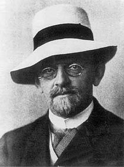

David Hilbert
David Hilbert (23 de enero de 1862, Königsberg, Prusia Oriental – 14 de febrero de 1943, Gotinga, Alemania) fue un matemático alemán, reconocido como uno de los más influyentes del siglo XIX y principios del XX. Estableció su reputación como gran matemático y científico inventando o desarrollando un gran abanico de ideas, como la teoría de invariantes, la axiomatización de la geometría y la noción de espacio de Hilbert, uno de los fundamentos del análisis funcional.
Kurt Gödel

Reconocido como uno de los más importantes lógicos de todos los tiempos, el trabajo de Gödel ha tenido un impacto inmenso en el pensamiento científico y filosófico del siglo XX. Gödel, al igual que otros pensadores como Gottlob Frege, Bertrand Russell, A. N. Whitehead y David Hilbert intentó emplear la lógica y la teoría de conjuntos para comprender los fundamentos de la matemática. A Gödel se le conoce mejor por sus dos teoremas de la incompletitud, publicados en 1931 a los 25 años de edad, un año después de finalizar su doctorado en la Universidad de Viena.